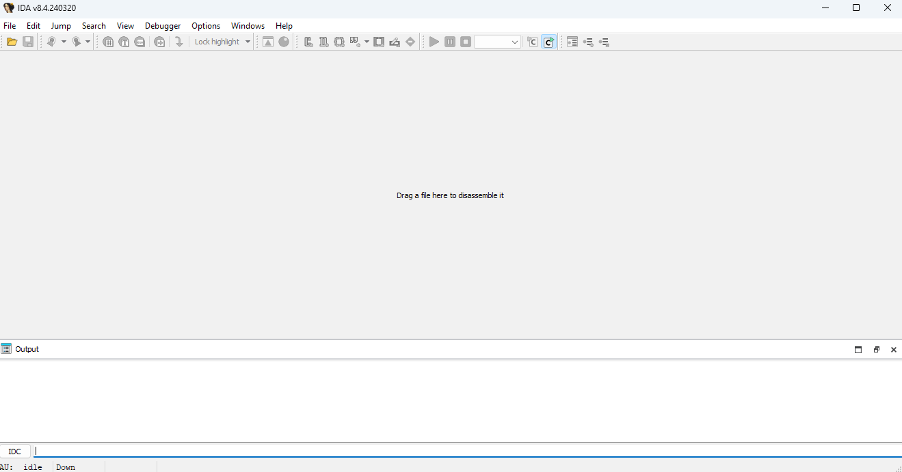

Tools of the Trade
Visual Studio
As I mentioned before, learncpp explains how to use Visual Studio and I expect you to have some experience with C++ (if you don't, what are you even doing here, go learn) so I will not personally go into too much detail on how to use it unless it’s necessary.
IDA
Disassembly
- First you need to launch the 64bit IDA Pro executable. When you do so, you should see a screen similar to this:

- Press
'File', then‘Open’and a file dialog will be opened. You can either select the windows executable or the Ubuntu binary (which you should have already downloaded and unzipped into a folder. - Another screen will pop up. If you are disassembling Ubuntu BDS, leave everything as default. If you're disassembling windows BDS, make sure the 'Load Resources' option is checked.
- When analyzing windows BDS, a message box pops up asking if you want to load the PDB.
- Choose 'Yes'. It'll fail to find it, then it'll ask to search for it on the Microsoft Symbol Server.
- Click on 'Yes' and it'll fail again and ask to browse it on the disk.
- Select 'Yes' and it'll open another file dialog; then select the PDB.
IDA Pro has an automatic analysis phase during which the file is first loaded. The more the content and the more program files you analyze, the slower it will be. BDS analysis can take from half an hour to a day with IDA, depending on your hardware and how much memory is being used by other processes.
The colored bar at the top of the main screen has 2 arrows. A yellow one which indicates where your cursor is placed, and a red one which is displayed during analysis to indicate progress. Don't do anything until that red arrow has dissappeared or you see "The initial autoanalysis has been finished" on the output window at the bottom of the main window. Here's some advice: If you click on the top of the function window that will show up on the left side of the screen, it'll order the functions alphabetically. DO NOT do this while the file is being analyzed. It's likely IDA will crash.
Navigating IDA
- The Functions Window on the left lists all functions. Use Ctrl+F to search by name.
- Double-clicking a function opens its disassembly.
- Press F5 to view the pseudocode in a tab labeled "Pseudocode-[number]."
- Open the Local Types Window with Shift+F1 to view structs, enums, unions, etc. Right-click on a type to edit and see its declaration.
- For specific values (e.g., minimum spacing between ocean monuments), locate the class constructor and decompile it. Constructors are named after the class (e.g.,
OceanMonumentFeature::OceanMonumentFeature).
Useful Functions
-
Jump to Xref:
- Right-click a function/type/variable and select Jump to Xref or Jump to Xref Globally to see where it’s used.
-
Generate C File:
- To export the entire disassembly as a C file: File > Produce File > Create C File. Note that this process is time-intensive.
-
Sync with [Window]:
- To modify a hardcoded value (e.g., piston push limit):
- Right-click the value in the Hex View.
- Select Synchronize With > Hex View-[number].
- The corresponding section in the Hex View will be highlighted for easier navigation.
- To modify a hardcoded value (e.g., piston push limit):
Example: Modifying Piston Push Limit
- In
PistonBlockActor::_checkAttachedBlocks(81st line) andPistonBlockActor::_attachedBlockWalker(146th and 190th lines), replace the value0xC(12 in hexadecimal). - Alternatively, use this Python script to patch it automatically:
Outcrop
Outcrop is straightforward to use. Check the GitHub repository for detailed instructions.
Xenos
- Download and run Xenos.
- In the Process Selection section, select New and open the
bedrock_server.exefile. - In the Images section, click Add and select the DLL file.
- Click Inject.
Note: Windows Defender may flag Xenos as a false positive (e.g., Vigram.A). Options:
- Whitelist the file/folder.
- Or, manually deal with Defender’s notifications each time.
Caution: Avoid whitelisting folders casually, as this can be exploited by malicious scripts to install malware.
This guide emphasizes careful setup and navigation of tools essential for reverse engineering BDS, particularly using IDA Pro and Visual Studio, while ensuring security and stability during modifications.